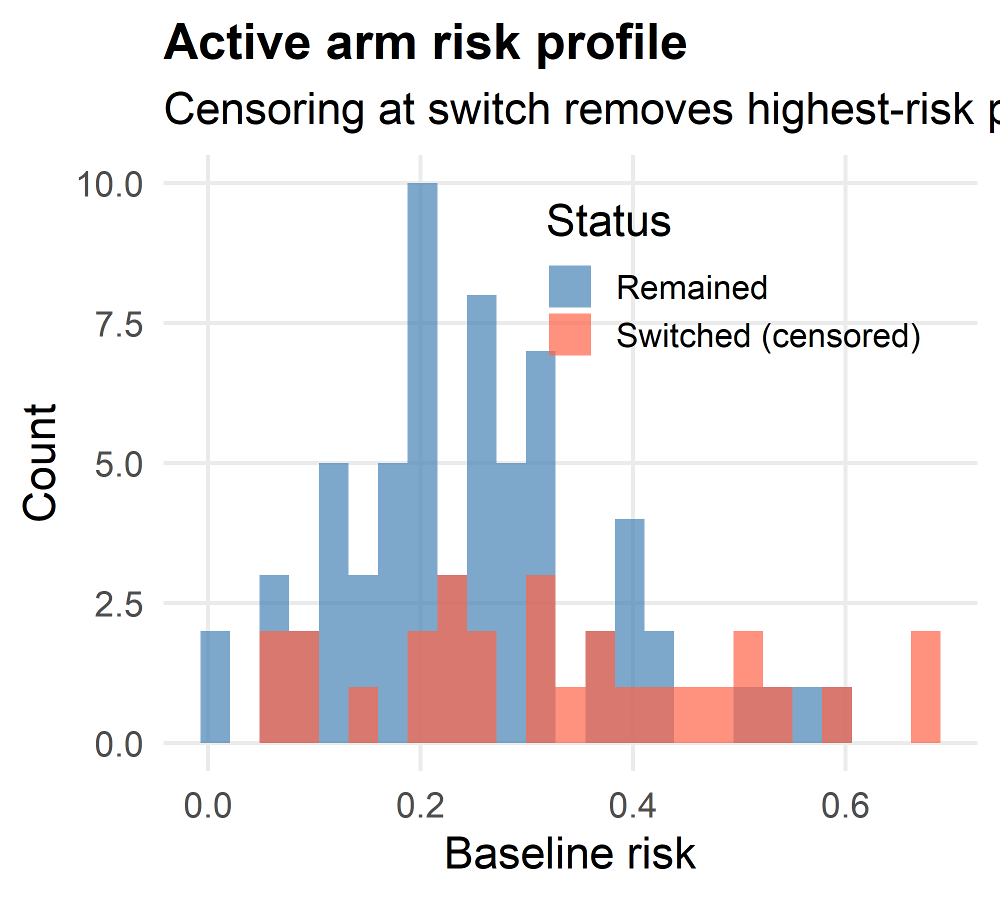
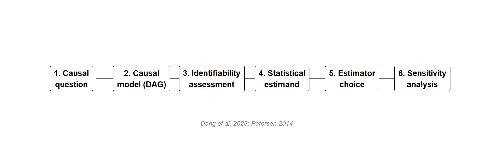
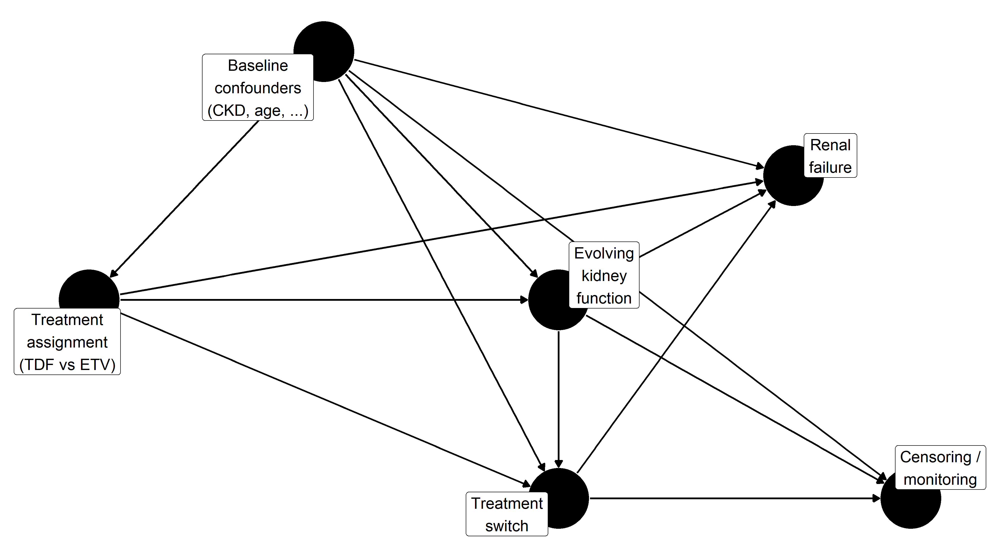
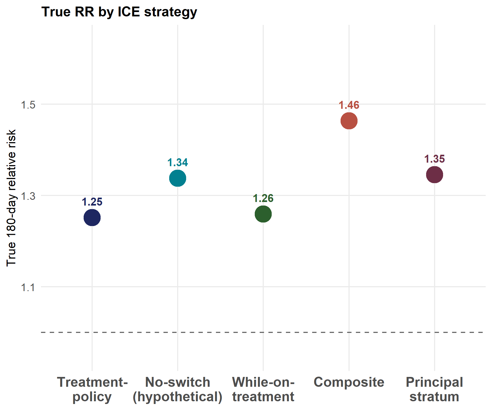
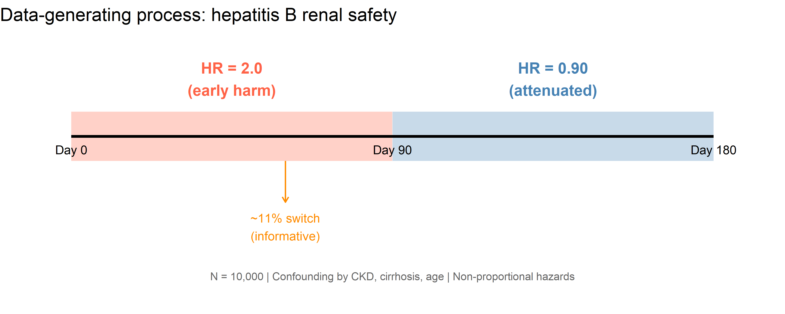
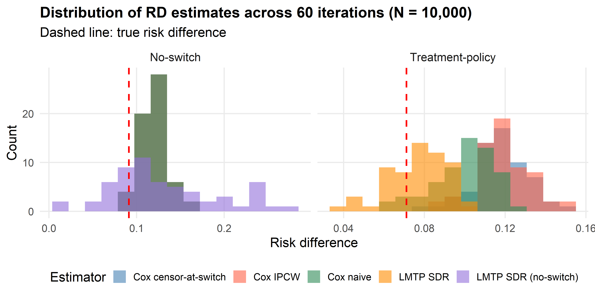
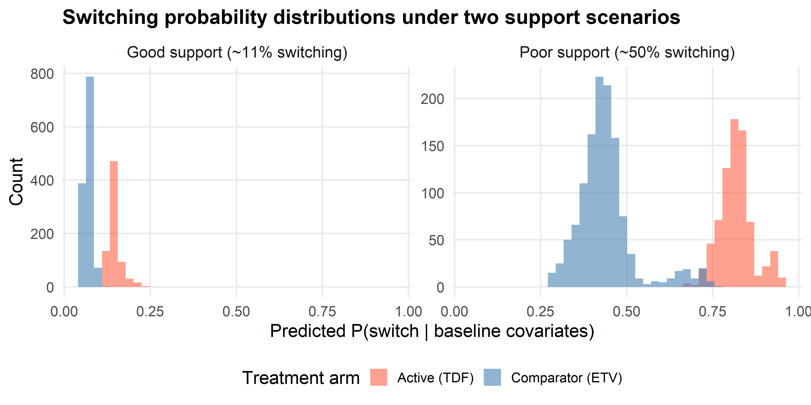
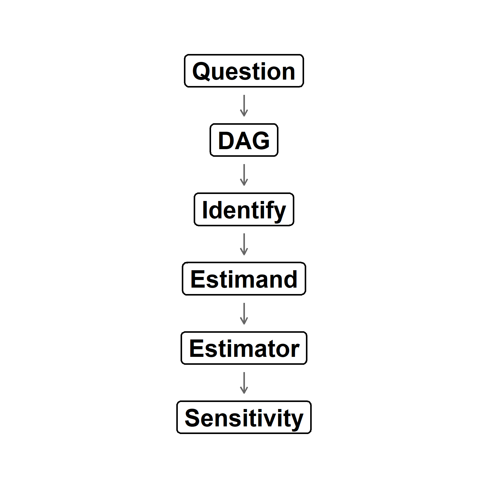

A causal roadmap approach to intercurrent events in time-to-event studies
University of California, Berkeley
2026-04-16
In post-authorization safety studies, the question “does this drug increase the risk of [adverse event]?” has no single answer until several decisions are made:
Intercurrent events complicate the question:
Each changes what the analysis is actually estimating.
Three distinct failure modes:
Setting: Post-marketing comparison of two hepatitis B antivirals for renal safety
Key complication: CKD drives both switching and the outcome — switching is informative.
Published evidence:
The analysis should proceed through a structured sequence, not jump directly to a regression model.

Figure 1
Most analyses jump from step 1 to step 5. Steps 2–4 are where estimand–estimator mismatches originate.

Figure 2
The ICH E9(R1) addendum defines five strategies for handling the same intercurrent event. Each defines a different causal quantity — even from the same data.
1. Treatment-policy | Follow all patients regardless of switching | Real-world effect of initiating treatment, including downstream switching
2. Hypothetical no-switch | Model / intervene to prevent switching | Effect if no patient could switch — isolates the direct pharmacological effect
3. While-on-treatment | Switching treated as censoring event | 180-day risk with follow-up censored at switch; LMTP censoring model adjusts for informative switching
4. Composite | Absorb switching into the outcome | Risk of renal failure OR switching — conflates tolerability with safety
5. Principal stratum | Restrict to latent never-switchers | Effect among patients who would not switch under either treatment; oracle analysis in simulation
Each answers a different clinical question. Choosing among them is a scientific decision, not a statistical one.
Under the simulation DGP, the same drug produces different risk differences depending on the estimand strategy.

Figure 3
The Cox hazard ratio is a conditional parameter. It does not generally equal the marginal risk contrast defined by any of the estimands above.
Three issues compound:

The estimator should follow from the estimand, not the reverse.
Conventional approaches:
| Analysis | What it estimates |
|---|---|
| Cox, ignore switch | Conditional HR; risk set altered by switching |
| Cox, censor at switch | Conditional HR among non-switchers; biased if switching informative |
| Cox, time-dependent trt | Conditional HR for current exposure; not a marginal target |
Estimand-aligned approaches:
| Method | Target |
|---|---|
| LMTP / SDR | Marginal risk under specified intervention |
| TMLE | Marginal risk under specified intervention |
| G-computation | Marginal risk (requires correct outcome model) |
| IPCW | Marginal risk (requires correct weight model) |
All require specifying the intervention that defines the estimand.
The SDR estimator is doubly robust: consistent if either the outcome model or the treatment/censoring model is correctly specified.

Figure 5
Each simulated dataset is analysed with four estimators. We summarise performance on two scales:
Estimand scale (risk difference)
Estimator scale (hazard ratio)
Reporting both exposes distinct failure modes:
| Analysis | Scale | Estimate | KM RD | True TP RD |
|---|---|---|---|---|
| Cox (baseline trt) | HR | 1.5600 | 0.0869 | 0.0711 |
| Cox (censor at switch) | HR | 1.7280 | 0.1115 | 0.0711 |
| LMTP SDR | RD | 0.0683 | 0.0683 | 0.0711 |
The Cox HR and unadjusted KM risk difference reflect confounding — CKD patients are more likely to receive TDF and to develop renal failure. The LMTP risk difference is closer to the marginal truth but subject to finite-sample variability.

Figure 6
Across 60 iterations (N = 10,000 each), the production simulation yielded:
| Estimand | LMTP RD cov. | Cox RD cov. (best) | Cox HR cov. (best) |
|---|---|---|---|
| Treatment-policy | 98% | 48% (naive) | 10% (naive) |
| No-switch | 86% | 52% | 8% |
| While-on-treatment | 48% | 8% | 7% |
| Composite | 95% | 78% (IPCW) | 38% |
| Principal stratum (oracle) | 95% | 97% (naive, see below) | 60% (naive) |
Two findings deserve emphasis:
The estimand framework applies to any post-baseline event, not just treatment switching.
Informative loss to follow-up
LMTP C columns handle this structurally identical to switch-censoring.
Informative monitoring
Competing risks
concrete R package for continuous-time TMLE). . .
The same three lessons apply:
Even an aligned estimator fails when the data do not support the target intervention.

Figure 7
| Scenario | Cox naive HR | Cox censor HR | LMTP RD |
|---|---|---|---|
| Good support | 1.380 | 1.460 | -0.095 |
| Strained support | 1.168 | 1.371 | 2.180 |
| Poor support | 1.301 | 2.260 | -0.697 |
Under poor support:
Define the causal question — what treatment strategies are being compared? What outcome? Over what time horizon?
Specify intercurrent event handling — switching, censoring, death: which strategy for each?
Draw the DAG — identify confounders, mediators, colliders. Determine what is time-varying.
Assess identifiability — exchangeability, positivity, consistency. State assumptions explicitly.
Choose the estimator — match it to the estimand, not the reverse.
Diagnose support — check positivity before trusting any estimate.
Conduct sensitivity analysis — how robust is the conclusion to violations of key assumptions?
Common pitfalls:
Different estimands answer different questions. Under the simulation DGP, the same data yielded true risk differences from +6.4% (WOT) to +18.3% (composite), a range that depends entirely on how switching is handled.
Cox hazard ratios do not target the estimand. Across most estimand × estimator combinations, the Cox HR confidence interval contained the true marginal HR less than 40% of the time — and in the headline treatment-policy case, fewer than 10%.
LMTP targets the marginal risk difference directly. Near-nominal coverage (95–98%) for four of five estimands, with the while-on-treatment estimand the remaining weak spot (48%) due to censoring-model specification.
Diagnostics are not optional. Identification does not guarantee estimation. Positivity and support should be assessed before interpreting any causal estimate, and the estimand hierarchy (TP most robust → NS most demanding) should inform estimand selection.
The causal roadmap:

| Parameter | Value | Description |
|---|---|---|
h0 |
5 \(\times\) 10\(^{-3}\) | Baseline hazard |
HR_early |
2.0 | TDF vs ETV, first 90 days |
HR_late |
0.90 | TDF vs ETV, after 90 days |
lambda_sw0 |
1.0 \(\times\) 10\(^{-3}\) | Baseline switching hazard |
gamma_A |
0.80 | log-HR for treatment on switching |
gamma_ckd |
0.60 | log-HR for CKD on switching |
| CKD prevalence | 8% | Key confounder |
| N (simulation) | 10,000 | Per iteration |
| Time bins | 14-day (biweekly) | For LMTP discretisation |
| Estimand | Cox naive | Cox censor-at-switch | LMTP SDR |
|---|---|---|---|
| Treatment-policy | Conditional HR (not marginal RD) | Wrong estimand (censors at switch) | Baseline trt; marginal RD under static intervention |
| No-switch | Includes post-switch outcomes | Assumes non-informative censoring | Time-varying trt; holds constant = no-switch |
| While-on-treatment | Includes post-switch person-time | Biased if switching informative | Baseline trt; switch-censoring in C columns |
| Composite | HR for composite endpoint | Same | Baseline trt; composite in Y columns |
| Principal stratum | Not targeted | Not targeted | Baseline trt on oracle never-switcher subset |